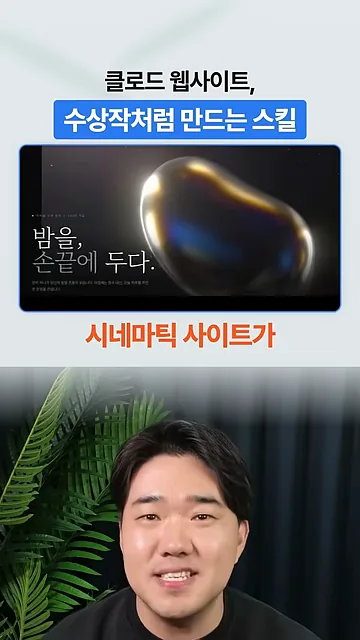
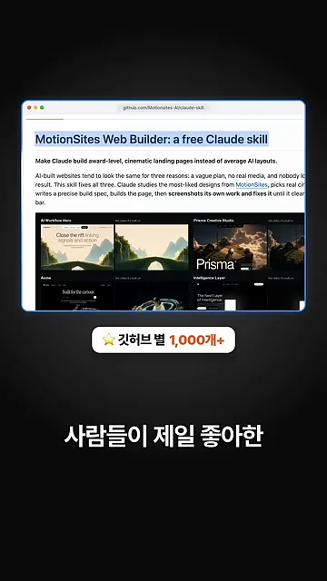
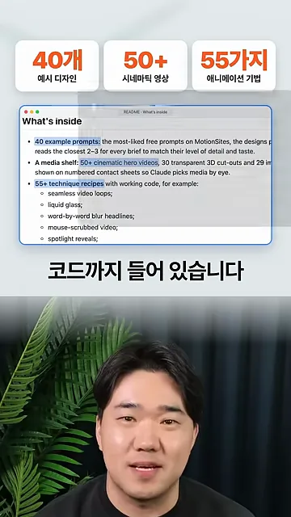
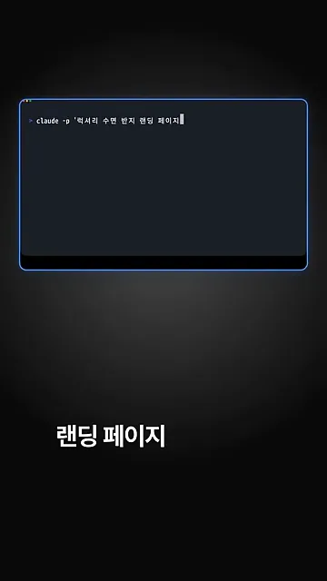
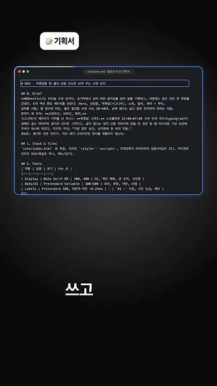
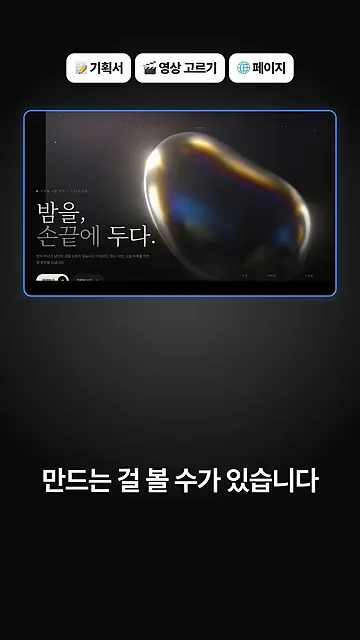
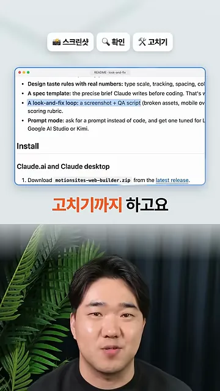
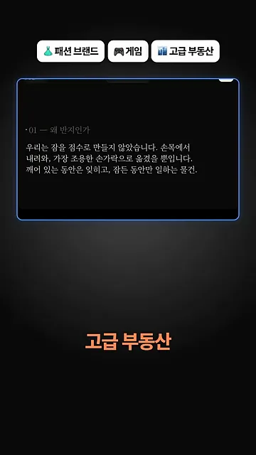
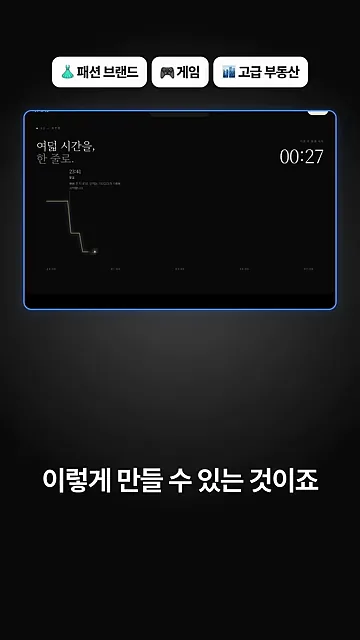

왜 다 비슷하게 나올까요
영상은 '클로드가 만든 사이트는 다 비슷하다'는 문제에서 출발해요. 화면에 '비슷비슷한 AI 사이트'라는 말을 줄로 지운 뒤, 검은 배경에 무지갯빛 금속 구슬이 떠 있는 페이지를 보여 줘요. 왼쪽 아래 헤드라인이 '밤을, 손끝에 두다.'예요. 이 스킬로 만든 시네마틱 사이트의 예시예요.

스킬을 공개한 곳은 MotionSites라는 웹 디자인 사이트예요. 사람들이 가장 좋아한 디자인을 모아 무료 스킬로 묶었다고 해요. 깃허브 저장소 첫머리에 'MotionSites Web Builder: a free Claude skill'이라는 제목이 있고, 그 아래 예시 디자인 썸네일이 줄지어 있어요. 영상은 깃허브 별이 1,000개를 넘었다고 강조해요.

스킬 안에 든 것
영상은 내용물을 숫자 세 개로 정리해요. 화면 위쪽 카드 세 장이 '40개 예시 디자인', '50+ 시네마틱 영상', '55가지 애니메이션 기법'이고, 아래 README의 'What's inside' 목록에서 해당 줄에 형광펜을 칠해 둬요.

세 숫자가 각각 무엇인지 README 문장과 맞춰 보면 이래요.
| 영상에서 부른 이름 | README 항목 | 클로드가 쓰는 방식 |
|---|---|---|
| 예시 디자인 40개 | 40 example prompts | MotionSites에서 가장 인기 있던 무료 프롬프트예요. 요청마다 가장 가까운 2~3개를 읽고 수준을 맞춰요 |
| 시네마틱 영상 50개 | 50+ cinematic hero videos | 미디어 선반에서 페이지에 맞는 히어로 영상을 골라 써요 |
| 애니메이션 기법 55가지 | 55+ technique recipes | 끊김 없는 영상 반복, 리퀴드 글래스, 단어별 블러 헤드라인, 마우스로 넘기는 영상, 스포트라이트 효과처럼 동작하는 코드가 붙은 레시피예요 |
한 줄 요청에서 완성 페이지까지
데모는 터미널에 요청 한 줄을 넣는 데서 시작해요. 프롬프트는 화면에 보이는 그대로 이거예요.

claude -p '럭서리 수면 반지 랜딩 페이지'이 한 줄을 받은 클로드가 거치는 순서를 영상은 화면 위 라벨로 하나씩 붙여 가요. 흩어져 나온 라벨을 한 장에 모으면 이렇게 돼요.
flowchart LR A["한 줄 요청"] --> B["기획서"] --> C["영상 고르기"] --> D["페이지"] --> E["스크린샷"] --> F["확인"] F -->|"깨진 곳"| G["고치기"] --> E
먼저 기획서를 써요
클로드는 코드부터 짜지 않아요. 창 제목이 site/spec.md인 파일에 '# 0. Brief'로 페이지 콘셉트를 적고, '## 1. Stack & files'에 파일 구성, '## 2. Fonts'에 역할별 폰트 표를 채워요. 표에는 제목용 Noto Serif KR, 본문용 Pretendard Variable이 보여요.

영상을 골라 페이지를 만들어요
기획서 다음은 영상 고르기와 페이지예요. 위쪽 라벨이 '기획서 · 영상 고르기 · 페이지'로 늘어나고, 금속 구슬 영상 위에 '밤을, 손끝에 두다.' 헤드라인을 얹은 첫 화면이 완성돼 있어요.

찍어 보고 스스로 고쳐요
다 만든 뒤에는 클로드가 직접 스크린샷을 찍어 깨진 데가 없는지 보고 고쳐요. 화면에는 '스크린샷 · 확인 · 고치기' 라벨과 함께 README의 'A look-and-fix loop' 줄이 강조돼 있어요. 스크린샷과 QA(Quality Assurance) 스크립트로 깨진 소재, 모바일 넘침 같은 문제를 찾는다는 설명이에요.

다른 업종도 만들 수 있다고 해요
마지막으로 영상은 패션 브랜드, 게임, 고급 부동산 페이지도 같은 방식으로 만들 수 있다고 말해요. 그런데 이때 화면에 나오는 건 수면 반지 페이지를 아래로 내린 모습이에요. 첫 화면 다음에 '01 — 왜 반지인가' 섹션이 나오고, 손목에서 손가락으로 옮겼다는 짧은 카피가 이어져요.

그다음 섹션은 '여덟 시간을, 한 줄로.'예요. 오른쪽 시각이 23:00에서 00:27로 넘어가면서 왼쪽 그래프 선이 계단처럼 내려가요. 잠드는 과정을 선 하나로 보여 주는 스크롤 연출이에요.
